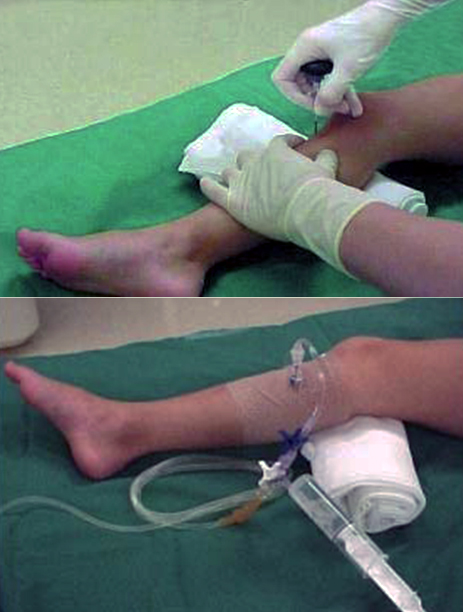

Bienvenue Sur Medical Education
Voie intra-osseuse
AdulteSpécialité : cardiologie /
Points importants
- Alternative de la voie veineuse périphérique chez l’enfant ou l’adulte en situation d’urgence vitale ou de ressuscitation de l’arrêt cardio-respiratoire
- Les posologies des agents administrés par cette voie sont les mêmes que par voie intra-veineuse
- L’abord pré-tibial est privilégié chez l’enfant et l’adulte. L’abord huméral peut-être envisagé chez l’adulte
- Il s’agit d’un abord en urgence et de courte durée compte tenu de complications potentiellement graves
Indications
- Arrêt cardio-respiratoire
- Etat de choc hypovolémique (cas de la gastro-entérite grave du nourrisson…)
- Echec de pose d’une voie veineuse en situation d’urgence aiguë
- Voie d’abord rapide et sûre
- Première alternative après 2 échecs d’abord veineux chez l’adulte et la recommandent chez l’enfant lors d’une réanimation cardiopulmonaire
Contre-indications
- Lésions osseuses du membre à ponctionner (Fractures, anamnèse de ponctions osseuses ou biopsie récentes)
- Infection locale cutanée
- Lésion osseuse en aval (veineux) du point de ponction
- Maladies osseuses congénitales (ostéogenèse imparfaite…)
- Intra-osseuse déjà en place
Présentation du matériel
- Plusieurs types de matériel
- Trocard manuel avec une poignée pour la prise en main et deux orifices latéraux
fichier_734 Photo Trocard manuel
- Système d’insertion par percussion (B.I.G.® Bone injection gun, video visible : http://www.dumont-securite.fr/materiel-medical-secours/urgence-medical/reanimation/perfusions-intra-osseuses/coffret-complet-injection-intra-osseuse-big/product_info.php/cPath/1_134_149/products_id/884)
 fichier_735
Photo
Système à percussion
fichier_735
Photo
Système à percussion
- Système à air comprimé : (EZ-IO® Vidacare, vidéo visible : http://www.vidacare.com/ez-io/index.html)
 fichier_736
Photo
Système pneumatique
fichier_736
Photo
Système pneumatique
Description de la technique
NOTIONS DE PHARMACOLOGIE
- La moelle des os longs contient un riche réseau vasculaire qui se draîne dans un canal central, avec ensuite une distribution dans la circulation veineuse centrale via les veines périostées ou nourricières
- La pharmacocinétique de la voie intra osseuse est très comparable à celle de la voie intra veineuse
- Une injection intra osseuse arrive au coeur droit dans les 10 secondes
- Le pic plasmatique est légèrement moins important mais dure plus longtemps lié probablement à un relargage à partir de la moelle osseuse
PROCEDURE D’UNE VOIE INTRA OSSEUSE

fichier_737
Photo
Exemple d'insertion chez l'enfant
- Une injection locale de xylocaïne 1%, jusque au périoste peut être nécessaire, en particulier si le patient est conscient
- Le membre à ponctionner doit être préalablement callé par un billot
- Après désinfection cutanée et des mains, le dispositif de pose, quel qu’il soit, est introduit perpendiculairement à la peau, à la face médiale du tiers supérieur du tibia ou latérale du tiers supérieur du bras puis est légèrement incliné (10-30°) vers le pied ou la main jusqu’au contact osseux
- Le système FAST1® est conçu pour une voie intra osseuse sternale
- Ensuite, selon la technique, soit le système à air comprimé est enclenché soit le trocart est enfoncé dans la corticale par des mouvements de rotation jusqu’à perte de résistance en faisant butée avec le pouce pour éviter de pénétrer la corticale opposée
- Maintenir fermement l'aiguille d'une main et dévisser le mandrin
-
Contrôler le bon emplacement de l'aiguille intra-osseuse :
- aiguille immobile dans l’os (pas de « jeu »)
- aspiration de sang ou de moelle à la seringue
- absence d’extravasation après IV lente de 5-10mL NaCl 0,9%
- absence de résistance à la perfusion
- Raccorder la perfusion à un robinet 3 voies et une rallonge
- Purger la ligne d’administration avec 5 à 10 mL de NaCl 0,9% pour éliminer les éventuels débris
- Il est extrêmement important, une fois l’accès osseux établi, de le protéger afin d’éviter l’agrandissement de l’orifice qui entraînerait une fuite dans les parties molles (syndrome de loges) et/ou la perte du cathéter qui nécessiterait une remise en place, obligatoirement sur un autre site
- Le taux de succès de mise en place est > 80% au premier essai, même chez des novices
- En cas d’échec, en raison des orifices «abandonnés» et du risque de fuite par ces derniers, il est nécessaire de changer de site d’implantation
ADMINISTRATION MEDICAMENTEUSE
- La perfusion peut être réalisée par gravité mais est plus efficace en utilisant une seringue électrique ou un dispositif de perfusion à débit constant ; plus simplement, on connectera à la tubulure, un robinet 3 voies et on administrera les perfusats par bolus successifs
- Il a été décrit des vitesses de perfusion jusqu’à 2,5 L/h
-
Médicaments administrables :
- ce sont la plupart des médicaments utilisés par voie IV dont l’administration de catécholamines, calcium, antibiotiques, héparine, bicarbonates, phénytoïne, curares, cristalloïdes, colloïdes, sang et de façon générale tous les médicaments de la réanimation
- les posologies utilisées sont identiques à celles administrées par voie IV
PRELEVEMENTS POSSIBLES
-
Il est également possible de faire des prélèvements d’urgence par l’abord intra-osseux :
- ionogramme sanguin
- gazométrie : pH, réserve alcaline
- hémoglobine
- détermination de groupe sanguin (éviter la réalisation d’une formule sanguine non interprétable)
Précautions d’emploi
- Il est conseillé de diluer les solutions hypertoniques ou hyperosmolaires
- Il est conseillé de diluer les produits très alcalins
- Après l’injection d’un médicament par voie intra osseuse, il est recommandé de purger la ligne d’administration avec 5 à 10 mL de NaCl 0,9%
-
Durée de maintien de l’abord intra osseux :
- cette notion est controversée car le taux d’infection « rapportée » est étonnamment faible. En dépit de ces constatations, il semble raisonnable de retirer un abord intra osseux posé en urgence dans des conditions d’asepsie souvent aléatoires, dès que possible, c’est-à-dire dès qu’une voie IV satisfaisante pourra être établie
- dans l’idéal, l’abord ne devrait pas être maintenu au-delà des 6 heures suivant sa pose
Pièges éventuels
- Injection sous-cutanée
- Fuite vasculaire à distance du point de ponction sur une lésion méconnue du membre ponctionné
Complications
Dues à une mauvaise technique
- Fracture de l’os perforé
- Os transfixié
- Extravasation autour du point d’insertion
- Infiltrat sous-périosté ou sous-cutané
- Lésion épiphysaire
- Syndrome de loges
Infectieuses
- Périostite
- Cellulite
- Abcès sous-cutané
- Ostéomyélite : 0,6-4% des cas : le plus souvent dans des contextes infectieux patents
- Embolie graisseuse
- Aucun cas rapporté avant 6 ans (absence de cellule graisseuse dans la moelle)
Autres
- Obstruction de l'aiguille par de la moelle, des fragments d'os ou de tissu
Surveillance
- Surveillance de la fixation et de l’absence de mobilisation du dispositif
- Surveillance du point de ponction
- Surveillance attentive du membre ponctionné : risque de syndrome de loge en cas d’extravasation de la voie intra-osseuse
- Surveillance de la courbe thermique
Bibliographie
- Bone injection gun placement of intraosseous needles: Andrew Curran, Specialist Registrar Emergency Medicine and Ayan Sen, Clinical Fellow. Emerg Med J 2005;22:366
Auteur(s) : Morgan LE GUEN